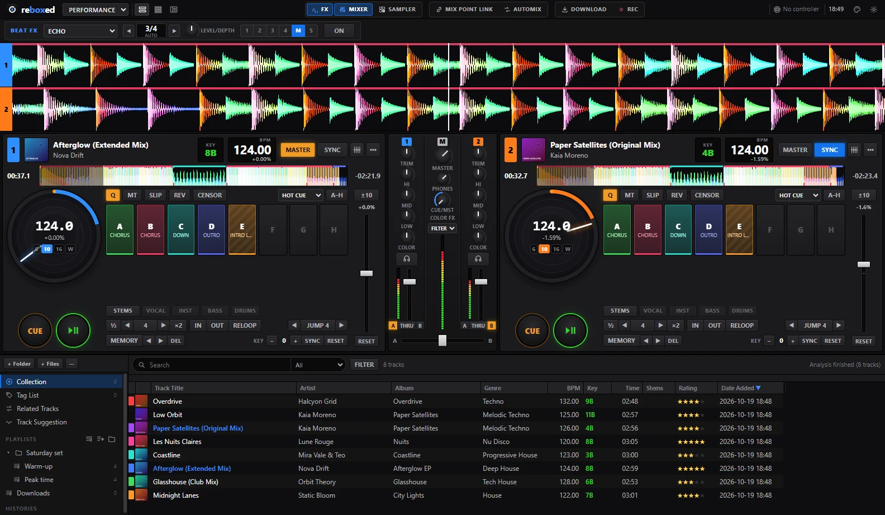
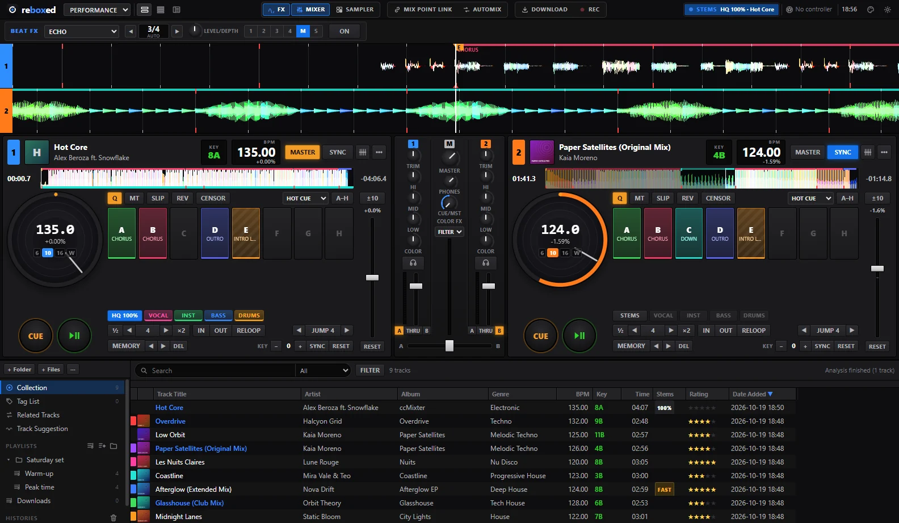
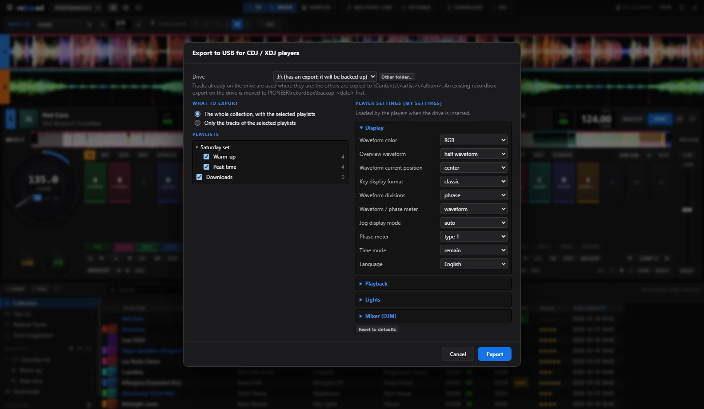
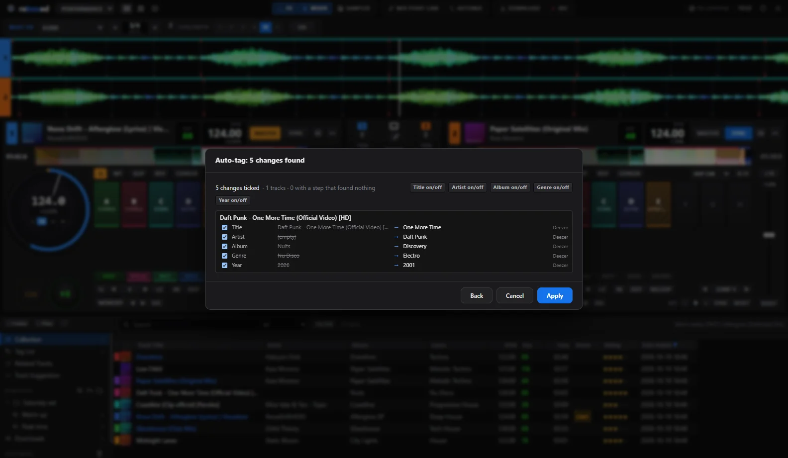
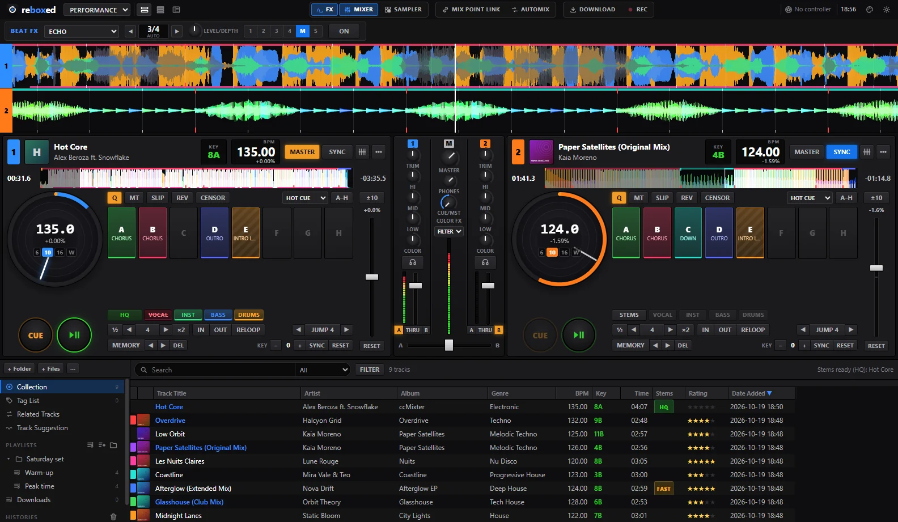

Thèmes
Le logiciel DJ gratuit et libre : decks avec jogs, stems par IA, export pour CDJ.

Capture réelle de Reboxed.
Les vrais stems calculés par Reboxed. Essaie.
Gratuit. Sans compte. Sans abonnement. Tout ce que tu fais dans rekordbox, avec ton contrôleur, en open source. Reboxed appartient à ceux qui mixent avec.
BPM et calibres au centre du jog, 16 hot cues, sync, scratch.

Une clé USB prête pour les lecteurs Pioneer, cues colorées comprises.

Genres, titres et artistes depuis Deezer et Spotify, en masse.

Jogs, pads, FX, LED, carte son : ce que rekordbox fait avec ton matériel, Reboxed le fait aussi.
